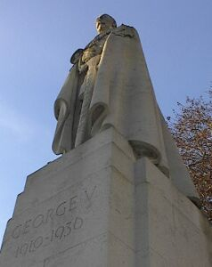
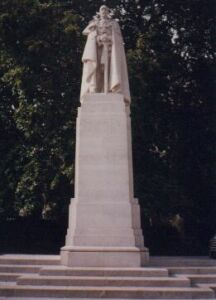
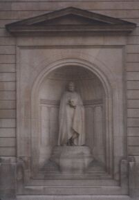
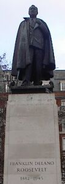

Unveiled 2/10/1939
Sculptor: Sir William Reid Dick RA b. Glasgow 13/1/1879 - d. London 1/10/1961
King's Sculptor in Ordinary for Scotland 1938-1952
Queen's Sculptor in Ordinary for Scotland 1952-1961
Cast by Morris-Singer Co, London
Signature on bronze F. Doyle Jones 1938
..."We are going to win this war - (applause) - not for the aggrandisement of our Empire. We are going to win this war to liberate mankind from the tyranny of dictators - (applause) - and this I say at the foot of our great King's statue
"Your Excellency, I now ask you to unveil this statue."
"I feel it a great honour," said the Lieut.-Governor, "to be asked to unveil this statue of his late Majesty King George V. He was a man of whom it can truly be said if it could be said of anyone that he gave his life to and for his country.
"It is difficult for me to add to what the Bailiff has said and expressed so well regarding the many benefactions and extreme generosity of Mr. Davis to his native island, but I feel all the more that it is an honour to unveil this statue of His Majesty King George V when I think what a great personal friend he was of Mr. Davis in their yachting days together. I think it is very suitable that his statue should stand here, at the entrance of the Howard Davis Park, given in the name of Mr. Davis's son, who gave his life for his country.
"I now have much pleasure and great honour in unveiling this monument," concluded His Excellency, pulling the string which released the covering from the statue.
The inscription on the base is:
"H.M. King George V. 1865-1936"
After the statue had been fully admired, most of the adults present took the opportunity of walking round the park and gaining some idea of the magnificent gift of which they had just been made, with the rest of the people of Jersey, the custodians. Meanwhile the young element had realised that there were "conkers" in the distance, and as soon as the speeches were over a crowd of youngsters charged across the grass in the direction of the chestnut trees.
Evening Post 2/10/1939
En ce qui concerne la statue de bronze elle représente Sa Majesté nue-tête et en robes de Cour avec insignes. Elle est frappante comme ressemblance avec celui dont elle perpétuera à tout jamais les traits et le souvenir. Son piédestal se compose de gros blocs de granit de notre localité superposés artistiquement.
Les Chroniques de Jersey 4/10/1939
FOREMOST among British sculptors, and representative of the more orthodox or classical school whose mainspring is found in the great traditions of European civilization, is Sir William Reid Dick, K.C.V O., R.A., King's Sculptor in Ordinary for Scotland. A glance through the photographs which follow will show from what sources the sculptor's inspiration derives. In his work will be found elements absorbed from the Greek, the Gothic and the Renaissance, often quite distinct and clear, and again, in scholarly combination, but with originality and resource and always with a modern accent. It is only through a profound study of "the undying masterpieces of the proven great " that we believe a style can be formed, and Sir William's style is both definite and personal. Such work should satisfy the most exacting tastes and present the least difficulty to the comprehension of the average beholder.
Reid Dick H. Granville Fell 1945
Hooliganism at Howard Davis Park
King George's statue daubed with paint
The statue of King George was daubed with black cycle enamel and green paint, the enamel having run over the head and down the left side of the figure of the King. The empty tin of enamel was found by the superintendent gardener, Mr. C.E. Lovett, upside down on the head of the statue.
Green paint has also been daubed on the right arm and side of the Garter cloak, the front and left hand of the statue, and to the front of the granite pedestal and base, some of it on the gold lettering of the memorial....
EP 29/12/1955
Whatever happened to 'keep Jersey clean and tidy'?
From Viv Ewing.
FOR over a year now I have walked through Howard Davis Park, twice a day, to and from work. I love to look at King George V but am saddened to see the statue never gets groomed of all the birds' excrement.
Why is this when we in Jersey think a lot of Royalty, especially after the sudden death of Diana, Princess of Wales? Lots of holidaymakers walk through Howard Davis Park and must be appalled at the mess of King George. Whatever happened to 'Keep Jersey clean and tidy'?
I do not know who is responsible and has the authority to have King George groomed occasionally and the gardeners working in the park agree with my sentiments completely The gardens are beautiful and well kept by the workmen. Is there nothing we can do in these times of great technology?
JEP 24/10/1997
ONE of the main features of the park is the statue of George V but for a few minutes the future of this imposing exhibit was in doubt.
The King was visiting Dartmouth on the royal yacht to see a ship which was being built further upriver. As T B Davis's schooner Westward was between this craft and the entrance to the river, he had his crew dressed in new white uniforms, and had the decks scrubbed white. He was so proud of the effect that the harbourmaster had to remove his shoes when he wanted to come aboard. Coincidentally T B Davis had also received an invitation from the King to come to dinner that evening, although he had not yet responded.
Gleaming decks
But as the royal barge passed Westward, with its crew lined up and its decks gleaming, the King turned his back and pretended to be studying Dartmouth Naval College, which lies on the other side of the river. This left T B rather angry, and he gave vent to one of his famous tirades of abuse. It is alleged to have gone something like this: 'Stuck-up old devil! To think I've just made a bloody statue of him and put it in my park in bloody Jersey. I'll uproot him! Yes I will, I'll uproot the old devil. Sod him. Sod everybody.'
This outburst was subdued with the news that the King had only turned his back as a joke and that he thought that Westward looked wonderful. This mollification must have worked. because T B and his wife attended dinner with the king that night. And the statue is still standing in the park.
JEP 2/10/1997
Seagulls lose a roost - for now
The bronze statue of George V in Howard Davis Park is undergoing a spring clean to protect it from the elements and to ward off unwanted visitors from perching on its head.
On the advice of sculptor Philip Jackson, Public Services give all the bronze statues in their care a thorough clean and wax twice a year.
Departments manager (civil works) Dick Richomme said that this protects the metal from the sea air, pollution and 'the other enemy' - seagulls.
The regal statue, which was renovated in 1998, is currently being waxed and polished all over and a special bird repellent will be applied to the head - depriving the seagulls of a favourite roost.
JEP 3/6/2000
George V, opposite House of Lords, London, was unveiled 22/10/1947 by George VI. This statue seems more monumental than the earlier George V that Reid Dick did for Jersey. No doubt the parliamentary setting is more suitable for the more hieratic nature of the pose than the more carefree setting of the Howard Davis Park.
|  |  |
of Parliament |
The eagle on the RAF memorial, London

Statue of Sir John Soane, Bank of England, London

Statue of F.D. Roosevelt, Grosvenor Square, London